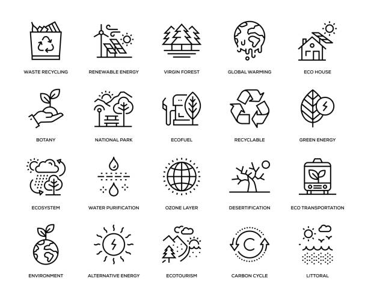

Nature conservation is the practice of protecting and preserving the natural environment and biodiversity. It involves the management and sustainable use of natural resources, including wildlife,
forests, oceans, and water resources. The goal of nature conservation is to maintain ecological balance and prevent the degradation of natural habitats, as well as to protect endangered species and
their habitats.
There has recently been a movement towards evidence-based conservation which calls for greater use of scientific evidence to improve the effectiveness of conservation efforts. As of 2018 15% of land
and 7.3% of the oceans were protected. Many environmentalists set a target of protecting 30% of land and marine territory by 2030.In 2021, 16.64% of land and 7.9% of the oceans were protected.
The 2022 IPCC report on climate impacts and adaptation, underlines the need to conserve 30% to 50% of the Earth's land, freshwater and ocean areas – echoing the 30% goal of the U.N.'s Convention on Biodiversity.
Ultimately, these movements should be further promoted to encourage biodiversity and to conserve a functional ecosystem.

Benefits of nature conservation:
Conserving nature has many benefits, including preserving ecosystem services such as clean water and air, providing habitats for wildlife, and supporting sustainable economic activities such as ecotourism.
So if you think about it, choosing to live a more sustainable life is just like an excellent investment for future generations to come.
to give them a chance to live in this world and experience the amazing things that our planet can offer.
By reducing our carbon footprint, our energy consumptions, fashion choices, and our diets, we can make a difference that will
change the lives of future generations to come.
We are all here due to the man heroic actions that generations before us took upon them to ensure that we could have a
future, so isn't it our obligation to ensure that the next ones will have a standing chance as well?
1. Reduce, reuse, and recycle:
By reducing your consumption of resources, reusing items as much as possible, and recycling whenever possible,
you can reduce the amount of waste you generate and the impact of waste on the environment.
2. Conserve water:
Fixing leaky faucets, taking shorter showers, and using drought-resistant plants in your garden can help
conserve water, an increasingly scarce resource in many parts of the world.
3. Use energy-efficient appliances:
Using energy-efficient appliances can help reduce your carbon footprint and save energy.
4. Use public transport, bike, or walk:
Choosing to walk, bike, or take public transport instead of driving a car can help reduce carbon emissions and air pollution.
5. Reduce meat consumption:
The meat industry is a significant contributor to greenhouse gas emissions and deforestation. By reducing your meat consumption or choosing
more sustainable and ethically raised meat, you can help reduce the impact on the environment.
6. Support conservation organizations:
Supporting organizations that work to protect natural habitats, wildlife,
and the environment can help ensure that these resources are preserved for future generations.
7. Plant trees:
Planting trees in your backyard or participating in reforestation efforts
can help combat deforestation and provide habitats for wildlife.
8.Reduce pesticide and herbicide use:
Using fewer pesticides and herbicides in your garden can help protect
beneficial insects, such as bees, and prevent the runoff of harmful chemicals into waterways.
9. Educate others:
Sharing your knowledge about conservation and sustainable living with others can help
create a larger movement towards a more environmentally conscious society.
10. Sharing resources and knowledge:
Collaboration enables the sharing of resources, knowledge, and expertise between different stakeholders.
For example, scientists can share their research findings with policymakers and conservation organizations, who can use that information to make better decisions about conservation efforts.
11. Creating synergy:
12. Use a dishwasher instead of handwashing.
Dishwashers use less water than hand-washing, especially if you keep the water running at all times. However, it would be best if
you only put your dishwasher on when completely full.
13. Invest in a pressure cooker.
Not only will you reduce your cooking time, but did you know that pressure cookers reduce the energy used by 70%.
14. Reduce your food waste by eating only what you need.
Overbuying food that will end up in the garbage is not only hurtful to your wallet, but it's also a waste for the planet so before you bu
it, make sure that you will eat it.
15. Start composting.
Compost can help the growth of plants and trees, so instead of putting your food scraps in the
garbage, start composting, and help to provide natural nutrients to your garden.
16. Recycle EVERYTHING.
If you can reuse it, recycle it.
17. Start using natural cleaners
Take an hour or so to research some homemade options for natural cleaners. Vinegar and water can clean most surfaces,
while the saponin from quinoa is a natural laundry detergent. By using natural cleaners you are reducing the amount of plastic packaging being made, and the
number of chemicals that are being introduced to the water system.
18. Stop unwanted mail, both paper and electronic.
Save natural resources by opting out of unwanted mailings and simplify your life. Various sites offer free services
to opt-out of catalogs, coupons, credit card offers, phone books, circulars, and more. It helps you to reduce clutter, protect privacy, and save the environment.
This applies to emails as well, since the more data is stored in your email account, the more energy your email provider consumes to keep that data.
19. Skip single-use items
We encounter single-use items in our day-to-day life. Single-use items like plastic straws, toilet paper, paper towels, plastic
grocery bags, and plastic cutlery are a big curse on our environment.Among the ways you can skip single-use items is to opt out of disposable utensils when ordering food
online, and buy things in bulk so that you get what you need with less packaging. You may not be able to remove all the items but can surely cut down the use of some of these items.
20. Replace all possible disposables.
Identify disposable products that are possible to replace with reusable ones. The list includes towels, shopping
bags, razors, cups, plates, food storage, diapers, batteries, writing pens, ink cartridges, coffee filters, furnace or air conditioner filters, etc. You may
buy refurbished, local or used products where possible.
21. Carry your own reusable shopping bags.
Whenever you go to a local market or a nearby mall for shopping, always carry your reusable shopping bags. It’s
never a matter of shame to carry a reusable bag along with you.Instead, it shows how much you care for the environment and how eager you are to live a
sustainable life. Carrying your own shopping bag lets you shop without needing to store your shopping items in several different plastic/paper containers.
22. Use Sustainable Technologies.
Make use of rechargeable batteries. Switch to a sustainable search engine like Ecosia. They run 100% on renewable
energy and use some of their profits to plant trees. Use solar energy chargers. Donate your old devices to poor kids or NGOs. Dispose of your electronic items
to local waste recycling programs.
23. Share with friends or borrow.
Things such as books, magazines, movies, games, and newspapers can be easily shared between friends and neighbors.
In the same way, if you need something temporarily, ask if a friend or neighbor would lend it to you. Sharing and borrowing can easily go side by side.
24. Buy Bigger Bottles.
Instead of buying small bottles often,buy bigger ones, which can also save your some money.
25. Shop Locally .
Shopping locally help you to support your community and travel fewer miles.
26. Share products with your family members.
If you can,instead of buying things like differents shampoos and deodorants individually, purchase one that can be shared by everyone.
27. Use public transports.
If you can, instead of taking your car to work,take public transportation or even better walk or cycle if you can so you help to reduce global warming.
28. Buy books from a second-hand books store,or go to the library.
Buying second-hand books,using library,or buying ebooks can save the environment by reducing the paper that we use.
29. Use organic Fertilizers.
Chemical fertilisers contaminate the soil and water,which is a significant reason for diseases on humans and is also
one of the causes behind the extinction of plants,animals,and even insects.
30. Use multipurpose bathroom products.
Instead of using many detergent to clean your bathroom,buy just one multipurpose that can do all the jobs in one.